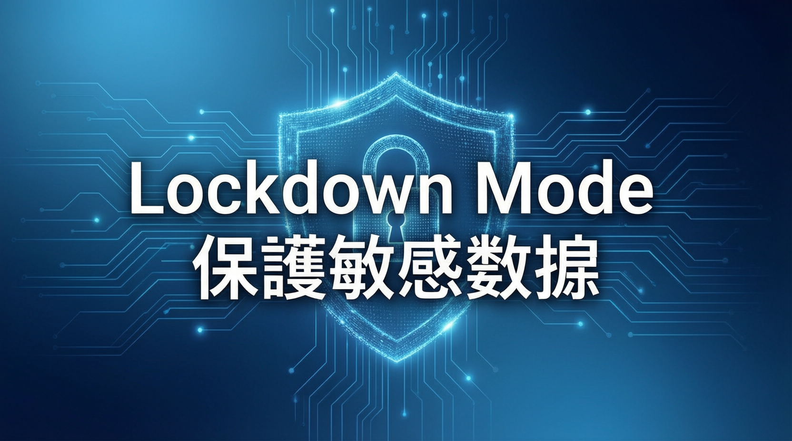

全新安全模式限制網絡訪問，降低提示注入數據外洩風險

OpenAI 推出全新 Lockdown Mode 安全功能，專為處理敏感數據的個人和企業用戶設計。此模式透過限制 ChatGPT 連接網絡或外部服務的能力，降低提示注入（Prompt Injection）攻擊導致數據外洩的風險。
啟用 Lockdown Mode 後，以下功能將被限制或停用：
Lockdown Mode 無法完全阻止提示注入攻擊。例如，藏在快取網頁內容或上傳檔案中的惡意指令，仍可能影響 ChatGPT 的行為或準確性。OpenAI 強調，此模式專為處理敏感數據且希望獲得嚴格保護的個人或組織設計，並非適用於所有人。
對於符合資格的個人帳戶和自助 ChatGPT Business 帳戶：
注意：Lockdown Mode 和 Developer Mode 不能同時使用，開啟其中一個會自動關閉另一個。
提示注入是一個前沿且具挑戰性的研究問題，攻擊者可能在網頁或其他內容來源中隱藏惡意指令。Lockdown Mode 的推出顯示 OpenAI 持續強化多層安全系統，但專家指出此模式不能保證百分百防護，風險仍可能存在於已啟用的應用程式、功能組合或新發現的攻擊技術中。
Q：Lockdown Mode 會關閉訓練嗎？
A：不會。Lockdown Mode 不會改變對話是否可用於改進模型，你可另行在數據控制中管理此設定。
Q：可以在單一對話中關閉 Lockdown Mode 嗎？
A：可以。在 Lockdown Mode 開啟時，選擇作曲框上方的 Lockdown 標籤，即可選擇「為此對話關閉」。
Q：Lockdown Mode 會影響 Codex 嗎？
A：不會。Lockdown Mode 不影響 Codex 的網絡訪問。
Q：Lockdown Mode 能完全阻止提示注入攻擊嗎？
A：不能。Lockdown Mode 旨在大幅降低提示注入導致的數據外洩風險，但無法保證完全不發生數據外洩。
限制向外發送的網絡請求，防止敏感數據被傳輸至攻擊者
結合沙盒、URL防禦、監控執行和企業控制等多層安全機制
為提升安全性，犧牲網頁瀏覽、深度研究、代理模式等部分功能
工作區管理員可透過角色訪問控制配置 Lockdown Mode 設定